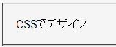

font-familyプロパティの指定値が［欧文フォントと総称ファミリ］または［総称ファミリのみ］である要素では、日本語などの2バイト文字が「□」や「・」に化けることがある。実体参照を用いて指定した文字だけで同様の文字化けを起きることもある。
<p style="font-family:'News Gothic MT',sans-serif;">CSSでデザイン</p>
CSSでデザイン
sans-serif総称ファミリに割り当てられるフォントは、例えば「ＭＳ Ｐゴシック」や「MS UI Gothic」が適切と考えられます。
Netscape7.02標準モード
font-familyプロパティには複数の値（フォント名）を指定することができますが、WinIEはその中で最初に有効なフォントしか文字の表示に用いません。そのフォントで表示できない文字は（font-familyプロパティの指定を無視して）デフォルトのフォントで表示します。
<div style="font:120% Arial,'ＭＳ 明朝',serif;"> ABC123あいう漢字</div>
上記の例は欧文をArial、和文をＭＳ 明朝で表示させようとしていますが、Arialフォントが有効な環境のWinIEでは和文文字がゴシック体で表示されてしまうはずです。従って、この不具合を確実に回避するためには、日本語文字を含むフォントをfont-familyプロパティで始めに指定する必要があります。
従って、例えば以下のようなスタイルを指定した場合は、
font-family: 'Lucida Sans Unicode', 'Arial Unicode MS', "ＭＳ 明朝", "平成明朝", Micho, serif;
font-familyプロパティでLucida Sans Unicodeフォントが最初に指定されており、かつこのフォントがシステムにインストール済みであることが不具合発生の原因になると思われます（Arial Unicode MSおよびそれ以降のフォント指定の有無は無関係）。
以下に挙げるマイクロソフト サポート技術情報も参照してください。
Win9x系のWinIE5.xや6.0で不具合が発生するようですが、環境によって差があります。